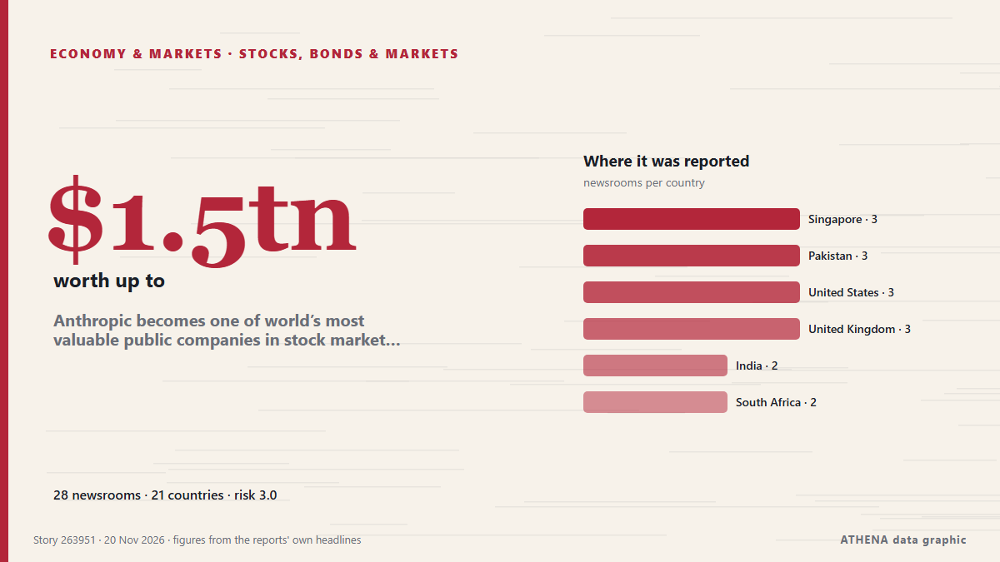

ATHENA Glaux Intelligence — Global news intelligence — every number explained
Every headline, checked across countries.
ATHENA Glaux reads 635 news outlets worldwide. A story becomes a verified event only when independent outlets report it. Each event shows who was first and a risk score with its reasons.
Reports drift in from independent outlets - when two meet on the same story, it becomes a verified event.
How ATHENA checks a story
- CollectReports arrive from independent outlets in many countries.
- MatchWhen two outlets meet on the same story, it becomes a verified event.
- ExplainEach event shows who was first, how far it spread and why the risk is what it is.

Economy & MarketsAnthropic becomes one of world’s most valuable public companies in stock market debut
Anthropic is the first purely AI company to be publicly listed, creating a test for the entire industry. from BBC News
There is no going back ‘to the way it was before’ the Iran war’s energy shock, IEA says
The International Energy Agency reports that the energy shock from the Iran war is reshaping global energy strategies. from Mongabay
'We will not negotiate' — Putin addresses Ukraine's strikes on Crimean Bridge
The remarks marked the Russian president's first public reaction to the attacks on the bridge, which he described as having sustained "serious damage." from Kyiv Independent

Ships at the world's chokepoints now
Live AIS counts. Tap or hover a bar for the detail.
Limiting Nuclear Weapons Will Be Hard, Says Trump After Meetings With Xi, Putin
"I love the concept of it but in terms of pure negotiation, it's a very hard thing for me as a president to do," Trump told Reuters by phone as he flew back to Washington from his trilateral summit… from NDTV World
Xi wants stronger bonds with Australia as Albanese defends Putin rebuke
“I made very clear to President Putin directly yesterday that he needs to stop his war, and he needs to stop it now,” Albanese said. from Sydney Morning Herald
UK PM urges Google to remove Russell Brand's innocence claim video
The convicted comedian and influencer insisted he is innocent in a statement read out by his wife in a video uploaded to YouTube. from Free Malaysia Today
Geopolitics, Politics & Security
More ›Netanyahu associates acknowledge role in setting off election day arrests
Prime Minister Benjamin Netanyahu of Israel at the country’s Parliament in Jerusalem on Tuesday. from The San Juan Daily Star
- Diplomacy & summits
US, China can help end Ukraine war, Trump tells Xi before trilateral with Putin
- Wars & conflicts
Saudi-led coalition says it intercepted Houthi ballistic missiles, destroyed launcher
- Elections & politics
Mary Peltola wins in Alaska, securing 56-44 US Senate majority for Democrats
- Elections & politics
Trump pushes decision on new Iran strikes into next year: ‘We’ve got time’
Economics, Finance & Markets
More ›GIC, one of Anthropic’s largest investors, to stay invested beyond IPO
AI company Anthropic's record-breaking initial public offering saw its shares close 17 per cent higher, giving it a fully diluted valuation of just below US$1.8 trillion. from CNA (Channel NewsAsia)
- Stocks, bonds & markets
Anthropic IPO will create thousands of multimillionaire employees
- Inflation & interest rates
Gold hits 14-month low as strong dollar, rate bets weigh
- Inflation & interest rates
Japan's core inflation accelerates to 2.2% in October
- Inflation & interest rates
Fed's Paulson backs further rate hikes
Trade, Industry & Infrastructure
More ›S’porean charged with trafficking 19kg of cannabis at Ipoh airport
No plea was recorded from Chen Long in the Ipoh magistrates' court as the case falls under the High Court's jurisdiction. from Free Malaysia Today
- Tariffs & export controls
Thailand seeks lower US tariffs on forced labour and excess capacity
- Agriculture & food security
Judge orders US agriculture chief to stop sending religious emails from official account
- Supply chains & logistics
Sallaum Logistics opens inland customs bonded compound in the Port of Limburg, Genk
- Construction & infrastructure
Russia cannot dictate 'unrealistic security demands': UK premier
Energy, Resources & Environment
More ›Pakistan vs Sri Lanka 2nd Test: Pakistan wins by eight wickets to clinch series
Pakistan chased down a 90-run target in just 13 overs to beat Sri Lanka by eight wickets in Rawalpindi and register its first Test series win of the year. from Sportstar
- Oil & gas
Ibaizabal, TotalEnergies name LNG bunkering vessel in China
- Extreme weather & natural disasters
Nepal flood victims' families may wait up to a year for death certificates
- Climate & climate policy
COP31 draft climate deal removes mention of fossil fuels
- Critical minerals
US-led consortium wins Kenya’s Mrima Hill mineral tender
Technology, AI & Cybersecurity
More ›Trump ousts cyber director after tech outages spark criticism
The Trump administration has faced criticism over its response to the tech outages. from The Straits Times
- Artificial intelligence
Anthropic pulled off the biggest IPO ever. What that means, by the numbers
- Cybersecurity
Hackers Leak Visa, Mastercard and JPMorgan Customer Data
- Media & disinformation
Air Force One reporters' phones locked away over China spying fears
- Artificial intelligence
Anthropic’s blockbuster debut tests Wall Street’s faith in AI boom
Business, Companies & Investment
More ›- Corporate strategy
Energean: Record liquid hydrocarbon production in Q3, net profit up 54%
- Sectors & company risks
US lawmakers urge curbs on China’s aerospace sector
- Sectors & company risks
General Pants Co enters voluntary administration, putting hundreds of jobs at risk
- Corporate strategy
APEC live: China releases leaders' statement after its disappearance from APEC website
Accidents & emergencies
More ›Fire tears through paper mill overnight in Vietnam's Can Tho
A fire broke out at Lee & Man Vietnam's paper mill in Can Tho City, southern Vietnam on Thursday night, engulfing about 20,000 square meters of its raw material storage area and remaining… from Tuoi Tre News
- Accidents & emergencies
Six bodies recovered from rubble after explosion in residential building in Tbilisi - VIDEO - UPDATED - 5
- Accidents & emergencies
Bayesian crew unaware of safety risk before deadly sinking, British report finds
- Accidents & emergencies
Prisoner allegedly 'beaten and set on fire by his son' in vicious cell attack
- Accidents & emergencies
Helicopter was flying ‘extremely’ close to water before deadly crash in Florida, NTSB says
Three ways to read today
Start with the one that fits your timeVerified events
Ranked by how widely they are reported
- Trump’s historic summit with Xi, Putin106 outlets · 51 countriesRisk 5.3
- Trump bought up to $265,000 of Nvidia stock in September, disclosure shows144 outlets · 47 countriesRisk 4.4
- LPG Tanker Fire Brought Under Control in the Strait of Hormuz104 outlets · 39 countriesRisk 4.2
- Today in Korean history74 outlets · 33 countriesRisk 3.9
- A brief history of Nvidia’s recent stock fluctuations59 outlets · 28 countriesRisk 3.6
Analysis Desk
Ask a question and read a reasoned assessment of a leading story, with what would prove it wrong.
Open the Analysis Desk ›Today in numbers
| 09:00 | 427 |
|---|---|
| 10:00 | 465 |
| 11:00 | 446 |
| 12:00 | 404 |
| 13:00 | 680 |
| 14:00 | 631 |
| 15:00 | 529 |
| 16:00 | 671 |
| 17:00 | 517 |
| 18:00 | 554 |
| 19:00 | 573 |
| 20:00 | 537 |
| 21:00 | 693 |
| 22:00 | 729 |
| 23:00 | 420 |
| 00:00 | 528 |
| 01:00 | 475 |
| 02:00 | 442 |
| 03:00 | 412 |
| 04:00 | 662 |
| 05:00 | 433 |
| 06:00 | 487 |
| 07:00 | 400 |
| 08:00 | 560 |
Risk of today's events
Emerging signals
- Sudden surge · Active nowAlibaba
- Sudden surge · Active nowRohingya
- New name in the news · Active nowSean Cairncross
- Sudden surge · Active nowWilling
- Sudden surge · Active nowAnthropic's
Stay informed
ATHENA Weekly Risk Picture
The week's biggest geopolitical, economic and shipping risks, cross-checked and scored.
Every Friday at 08:00 Athens time · free · in English
Subscribe freeATHENA on Telegram
News the moment it is published: breaking events at risk 6 or more, an hourly round-up, risk-tracker updates and the daily briefing at 10:00.
Free · posts in English · leave at any time
Join the channelSign-up is handled by beehiiv with double opt-in: nothing you type is sent to ATHENA, and every issue has an unsubscribe link.
Risk trackers
More ›Global risk outlook — week 47, 2026 (16–22 Nov) ›